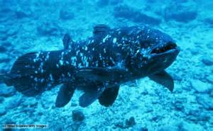

Il celacanto
I celacanti, strettamente imparentati ai dipnoi o pesci polmonati, sono tra i più antichi vertebrati dotati di mascelle conosciuti: i loro resti si rinvengono fin dall'inizio del Devoniano (410 milioni di anni fa). Fino al 1938 si pensava che questi pesci si fossero estinti almeno 65 milioni di anni fa, alla fine del Cretaceo; con la scoperta di un esemplare di Latimeria chalumnae nel canale di Mozambico apparve chiaro che i celacanti sopravvissero all'estinzione, e sono da considerarsi veri e propri fossili viventi. Nel 1999 una seconda specie, Latimeria menadoensis, fu rinvenuta nei pressi di Sulawesi in Indonesia.
Questi animali appartengono al grande gruppo dei sarcopterigi (Sarcopterygii), o pesci dalle pinne lobate, che comprende anche i dipnoi (come il protottero) e i cosiddetti ripidisti (tra cui Eusthenopteron), che diedero origine ai tetrapodi.
I celacanti possiedono pinne pettorali e anali carnose, supportate da ossa; la coda è dificerca (divisa in tre lobi) e il lobo mediano include una continuazione della notocorda. Le scaglie dei celacanti sono un particolare tipo di scaglie cosmoidi, caratteristiche esclusivamente di alcuni gruppi di pesci estinti. Un'altra caratteristica dei celacanti è la presenza di un apparato elettrorecettivo, denominato organo rostrale, nella parte anteriore del cranio, il quale probabilmente aiuta l'animale nell'individuazione della preda.